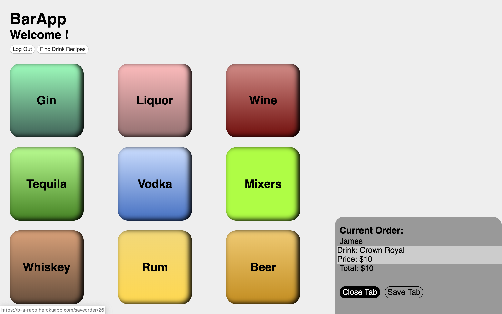
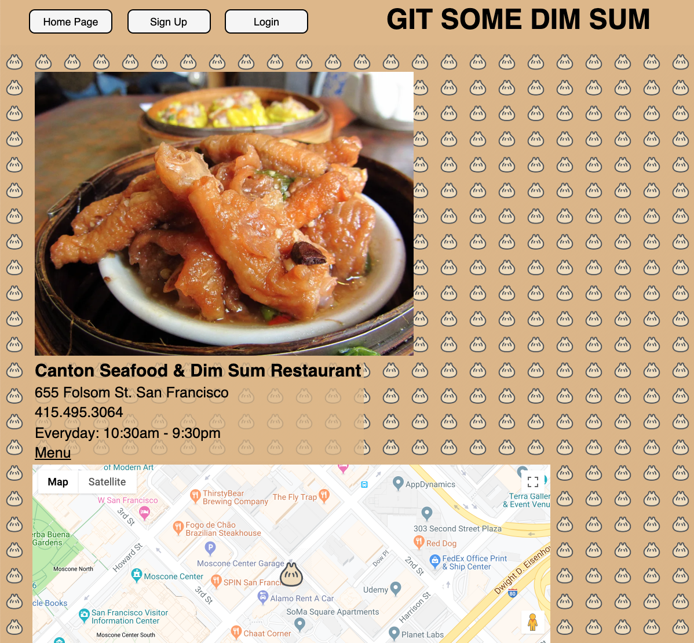

BarApp

GitHub Repository
Deployed Site
Bartender point of sale application that allows a user to add drinks to a bar tab, save tabs by customer name, and search for cocktail recipes (served by an external API). Built with Django and PostgreSQL. This project taught me about the complexities of handling less-than-ideal API responses, relational database savvy, and it was the project where GitHub collaboration clicked for me.
Git Sum Dim Sum

GitHub Repository
Deployed Site
Dim sum restaurant discovery app built with Express, Node, Mongoose, and MongoDB, with Google Maps API integration. The EJS I learned on this project helped me to excel with React later in the course.